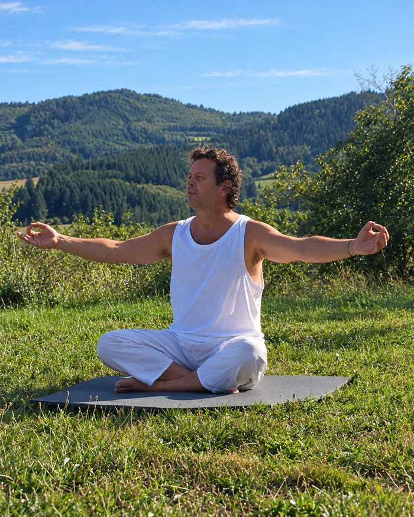

Kundalini Yoga · Jodoigne · Mardi 9h–10h30

Depuis une vingtaine d’années, je pratique le Kundalini Yoga. D’abord pour me ressourcer à côté de mes activités, dans lesquelles je donnais beaucoup, puis, peu à peu, parce que cette pratique a pris une place de cœur et de sens dans mon quotidien. Je l’enseigne à mon tour depuis une petite dizaine d’années.
Le Kundalini Yoga est pour moi un chemin d’exploration, profondément ancré dans le corps et ouvert sur notre monde intérieur, mais aussi sur le monde qui nous entoure. Une pratique qui nous met en lien.
Par les postures, les mouvements, les respirations, les mantras, la relaxation et la méditation, nous explorons différentes façons de nous rendre plus présents à nous-mêmes. Nous apprenons à mieux habiter notre corps, à développer notre vitalité et à découvrir de nouvelles possibilités en nous. Lorsque le corps se met en mouvement et que le souffle trouve son rythme, l’agitation du mental peut aussi s’apaiser, laissant davantage de place à la présence et à l’écoute.
C’est également un chemin de conscience : accueillir nos émotions, observer nos pensées et nos réactions avec un peu plus de recul, et porter un regard différent sur nous-mêmes, sur les autres et sur notre quotidien.
J’aime cette alliance entre l’ancrage dans le corps et l’ouverture de la conscience, entre l’expérience concrète du mouvement et l’exploration de notre monde intérieur.
Sans recherche de performance ni promesse particulière, je vous propose d’explorer tout cela ensemble, avec curiosité, humilité et, autant que possible, le sourire. Le yoga est aussi un chemin de joie, où l’on peut apprendre beaucoup sans pour autant se prendre trop au sérieux.
Débutants ou pratiquants expérimentés, vous êtes les bienvenus !
Au plaisir de partager cette pratique avec vous.
Aucun prérequis — ouvert à tous niveaux. Venez tel que vous êtes.
Tapis fournis sur place. Tenue souple conseillée.